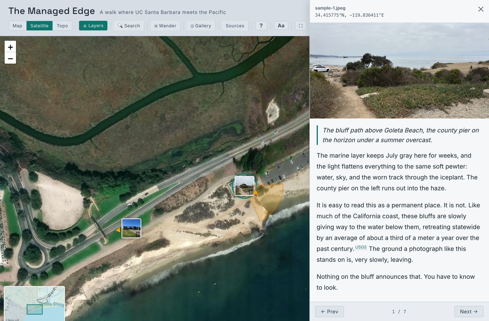

Document a place through geolocated photographs and the writing that interprets them.
MIRL Map turns a body of photographs into two readings of the same material: an interactive map, where each image rests at the place it was made, and a photo essay that moves through them in sequence. Add a caption and as much interpretation as the work asks for. Built for fieldwork, archives, exhibitions, and the classroom, and yours to own, cite, and keep.
Creating a map opens GitHub, where you sign in and a copy is made in your own account. Free, open source, and no coding required.

Open the example ↗Sign in with GitHub and a complete copy of the platform is created in your account. You hold the repository, the images, and the text from the start.
Work in a browser dashboard, or directly in plain text files. Each photograph takes a caption and an optional narrative; its location and orientation are read from the image itself.
Publish your map and photo essay online at no cost, at an address you control. Everything is kept as plain images and text, legible long after the software has moved on.
MIRL Map is a method rather than a template. If a subject can be photographed and located on a map, it can be documented here.
A new map is nothing but your photographs and your words. Each further capability stays out of the way until you call on it.
MIRL Map began as a documentary map of the village of Lifta and was generalized so that any researcher, teacher, or community could use the same method. It is developed and maintained at the Material / Image Research Lab in the Department of History of Art and Architecture, UC Santa Barbara.
Free to use and yours to keep. From signing in to your first photograph on the map is a matter of minutes.
★ Create your own map